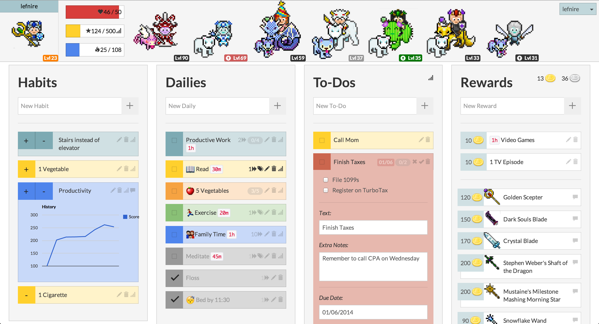

Ajastimia? Tehtävälistoja? Pelejä?!
Laitteet on keksitty helpottamaan arkea. Turha niitä on demonisoida elleivät ne vie huomiota itse työstä. On olemassa sovelluksia, jotka on suunniteltu nimenomaan opiskelun tehostamiseen. Miksi siis tehdä siitä tylsää?
Habitica
Habitica on 8-bit roolipelin tyyliin kehitetty sovellus, jolla tehtävälista on pelillistetty. Tehtäviä voi lisätä itse ja niiden tekemisestä saa palkinnoksi kultakolikoita, joilla saa ostettua hahmolle hienoja asusteita. Sovellukseen on myös nerokkaasti yhdistetty yhteisöllisyys. Voit liittyä tiimeihin ja kiltoihin, taistella hirviöitä vastaan ja saada palkinnoksi munia, joista saa itselleen lemmikkejä. Jos jätät tehtäviä tekemättä, hirviö vahingoittaa sinua ja tiimiläisiäsi.
